Curves Workbench/ru
Эта документация не закончена. Пожалуйста, помогите и внесите свой вклад в разработку документации.
Пример документирования команды Gui объясняет, как должны быть задокументированы команды. Просмотрите Category:UnfinishedDocu/ru, чтобы увидеть больше незавершённых страниц, подобных этой. Смотрите Category:Command Reference/ru для всех команд.
Смотрите Wiki Страницы, чтобы узнать о редактировании вики-страниц, и зайдите на страницу Помоги FreeCAD, чтобы узнать о других способах, которыми вы можете внести свой вклад.
Введение
Верстак Curves (Кривые)— это внешний верстак, основанный на языке Python и содержащий набор инструментов для работы с кривыми и поверхностями NURBS. Этот верстак разработан с использованием FreeCAD Master и OCC 7.4.
Примечание: Некоторые инструменты могут не работать с более ранними версиями.
Установка
Загрузите верстак Curves через  Менеджер Дополнений. Выберите из меню опцию Инструменты → Менеджер дополнений.
Менеджер Дополнений. Выберите из меню опцию Инструменты → Менеджер дополнений.
Ссылки
- Разработчик: @Chris_G
- Github: https://github.com/tomate44/CurvesWB
- Обсуждение: https://forum.freecad.org/viewtopic.php?f=8&t=22675
- Учебник использования верстака Curves на YouTube: https://www.youtube.com/watch?v=ZVdbvxmJ3Mo
- Учебник на Dailymotion, приливная бутыль, демонстрация верстака curves: https://www.dailymotion.com/video/x6bo9a6
Инструменты
В последнем обновлении порядок инструментов был приведён в соответствие с пунктами меню версии 0.6.59, а также были добавлены некоторые отсутствующие инструменты.
Инструменты кривых
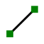
Parametric line (Параметрическая прямая): Создаёт параметрическую прямую между двумя вершинами.
{kind=link}
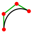
Freehand BSpline (B-сплайн от руки): Создаёт B-сплайн-кривую, нарисованную от руки.
{kind=link}
- Mixed curve (Кривая пересечения): Создаёт 3D-кривую как пересечение двух спроецированных кривых.
{kind=link}
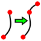
Curve extend (Удлинить кривую): Удлиняет выбранное ребро.
{kind=link}
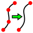
Join Curves (Объединить кривые): Объединяет выбранные рёбра в B-сплайн кривые.
{kind=link}
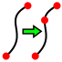
Split curve (Разделить кривую): Разделяет выбранную грань.
{kind=link}
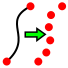
Discretize (Дискретизировать): Дискретизирует ребро или ломаную линию.
{kind=link}
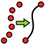
Approximate (Аппроксимировать): Аппроксимирует (преобразует) точки в поверхность или в кривую NURBS.
{kind=link}
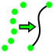
Interpolate (Интерполировать): Интерполирует точки с помощью кривой B-сплайна.
{kind=link}
- Blend curve (Плавный переход кривых): Создаёт параметрическую кривую плавного перехода между двумя ребрами.
{kind=link}
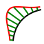
Comb plot (Гребень кривизны): Создаёт параметрический график «гребень» кривизны на выбранных рёбрах.
{kind=link}
- Curve On Surface (Кривая На Поверхности): Проецирует кривую на объект-поверхность.
{kind=link}
Инструменты поверхности
- ZebraTool: Zebra texture for surface inspection.
{kind=link}
- Trim face: Trims a face with a projected curve.
{kind=link}
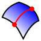
IsoCurve: Applies a UV oriented lattice onto selected surfaces.
{kind=link}
- Sketch on surface: Maps a sketch on to a surface.
{kind=link}
- Sweep2Rails: Creates a sweep either with a ruled surface and a list of profile edges or with two rails and at least two profiles.
{kind=link}
- Profile support plane: Creates a support plane for sketches.
{kind=link}
- Pipeshell profile: Creates a Profile object for PipeShell.
{kind=link}
- Pipeshell: Creates a Pipeshell sweep object.
{kind=link}
- Gordon surface: Creates a surface that skins a network of curves.
{kind=link}
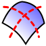
Segment surface: Segments a surface on isocurves.
{kind=link}
- Compression Spring: Creates a compression spring.
{kind=link}
- Reflect Lines: Creates the reflect lines on a shape, according to a view direction.
{kind=link}
- MultiLoft: Lofts profile objects made of multiple faces in parallel.
{kind=link}
- BlendSurface: Creates a surface between two edges with some continuity with their support faces.
{kind=link}
- BlendSolid: Creates a solid between two edges with some continuity with their support shapes.
{kind=link}
- Flatten face: Creates a flat developed face from conical or cylindrical faces.
{kind=link}
- Rotation Sweep: Sweeps profiles along a spine (sweep path) or a point.
{kind=link}
- Surface Analysis: Creates visual analysis maps on selected shapes. This tool has a wrong icon and name in the GUI.
{kind=link}
- Draft Analysis: Creates a colored overlay on an object to visualize draft angles.
{kind=link}
- Truncated Extend: Cuts a shape and truncates or extends it by a given distance.
{kind=link}
- WaterLine: Creates waterline curves on selected faces.
{kind=link}
Miscellaneous tools
- GeomInfo: Toggles the display of information about selected shapes.
{kind=link}
- Extract subshape: Creates non-parametric copies of selected sub shapes.
{kind=link}
- Parametric solid: Creates a parametric solid from selected faces.
{kind=link}
- Paste SVG: Pastes the SVG content of the clipboard.
{kind=link}
- Objects to console: Moves objects to the console.
{kind=link}
- Select Adjacent faces: Selects the adjacent faces of the selected subshape.
{kind=link}
- BSpline to Console: Creates a Python script to build the selected B-spline or Bézier geometries.
{kind=link}
- Curves IsoCurve, Curves JoinCurve, Curves ParametricComb, Curves ParametricSolid, .................
- Начинающим
- Установка: Загрузка, Windows, Linux, Mac, Дополнительных компонентов, Docker, AppImage, Ubuntu Snap
- Базовая: О FreeCAD, Интерфейс, Навигация мыши, Методы выделения, Имя объекта, Настройки, Верстаки, Структура документа, Свойства, Помоги FreeCAD, Пожертвования
- Помощь: Учебники, Видео учебники
- Верстаки: Std Base, Arch, Assembly, CAM, Draft, FEM, Inspection, Mesh, OpenSCAD, Part, PartDesign, Points, Reverse Engineering, Robot, Sketcher, Spreadsheet, Surface, TechDraw, Test Framework